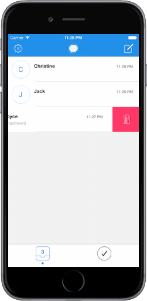
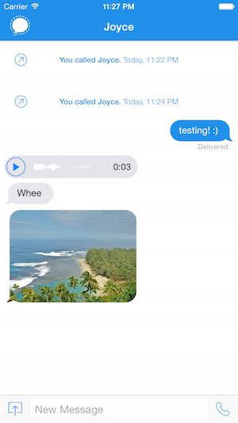
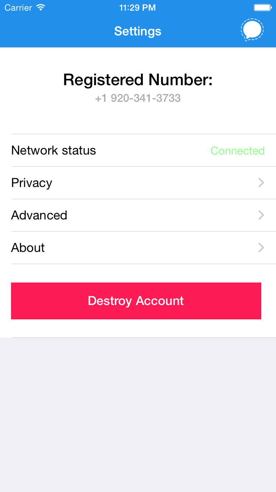
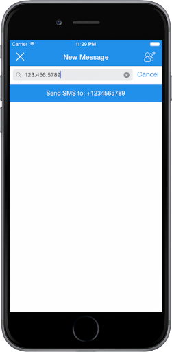

Signal
Signal is an open source iOS messaging app that provides end-to-end encryption using the axolotl protocol and is one of several apps released by Open Whisper Systems, a non-profit free software foundation. Software developed by Open Whisper Systems has been used by protesters in the Arab Spring, endorsed by Edward Snowden, and is considered "catastrophic" by leaked internal NSA documents due to its robustness.
I specifically was working on refining features to prepare for the 2.0 launch. My contributions include implementing support for audio messages, incorporating the ability to invite friends to use Signal, and modifying an external UI library, JSQMessagesViewController.



